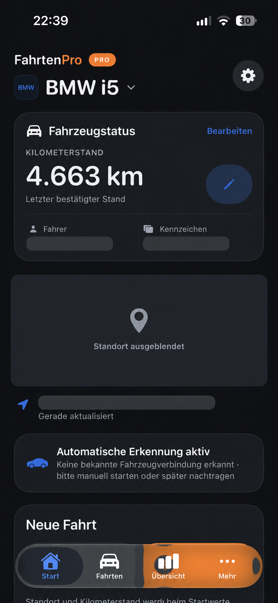

Weniger nachtragen.
Automatische Fahrzeugerkennung oder manueller Start. FahrtenPro hält den Fahrtverlauf fest.
FÜR SELBSTSTÄNDIGE & UNTERNEHMER
Dein digitales Fahrtenbuch für Selbstständige und Unternehmer. Fahrten automatisch oder manuell erfassen, einfach zuordnen und nachvollziehbar dokumentieren.
Veröffentlichung in Vorbereitung

DEIN ALLTAG. EINFACHER.
Ein Fahrtenbuch für alle, die selbst anpacken – vom Freiberufler bis zum Unternehmer mit mehreren Fahrzeugen.
Automatische Fahrzeugerkennung oder manueller Start. FahrtenPro hält den Fahrtverlauf fest.
Geschäftlich oder privat? Fahrtart wählen und bei betrieblichen Fahrten Anlass und Geschäftspartner ergänzen.
Fahrten zeitnah prüfen. Mit Pro das Fahrtenbuch exportieren und das Wirtschaftsjahr je Fahrzeug abschließen.
AUTOMATISCH ODER MANUELL
Die Erfassung nimmt dir Arbeit ab. Die Kontrolle über dein Fahrtenbuch bleibt bei dir.
FahrtenPro verbindet die Erkennung über CarPlay oder eine unterstützte Bluetooth-Freisprecheinrichtung mit tatsächlicher Bewegung. Die Verbindung aktiviert die Bereitschaft; das Losfahren startet die Aufzeichnung.
Die Aufzeichnung alternativ selbst starten. Fahrten lassen sich auch manuell nachtragen und anschließend prüfen und zuordnen – für die Wege, die wirklich passieren.
Die automatische Erfassung benötigt passende Standortberechtigungen. iOS, GPS-Empfang und Fahrzeugverbindung können die Erkennung beeinflussen. Prüfe deine Fahrten regelmäßig.
IM FAHRZEUG. AUF DEM IPHONE.
Unterwegs auf das Wesentliche konzentrieren. Danach den Überblick behalten.
Fahrten über die CarPlay-Oberfläche starten und offene Fahrten aufrufen.
Für die Bedienung im FahrzeugAktuellen Fahrtstatus und Strecke in der Live Activity auf dem iPhone verfolgen.
Die laufende Fahrt im BlickFahrtübersicht und Statistik nutzen, um die erfassten Wege übersichtlich zu betrachten.
Auch in Basic enthaltenPRÜFEN. ZUORDNEN. WEITERFAHREN.
Nicht jede Fahrt führt direkt von A nach B. FahrtenPro unterstützt dich bei der sauberen Dokumentation.
Fahrtart auswählen, Angaben prüfen sowie Geschäftspartner und Reisezweck ergänzen. Vorschläge helfen bei wiederkehrenden Strecken.
Zwischenstopps im Fahrtverlauf berücksichtigen, damit zusammengehörige Wege nachvollziehbar bleiben.
Zusammengehörige Fahrten verbinden und Hinweise auf möglicherweise fehlende Fahrten prüfen.
DOKUMENTATION MIT PRO
PDF und CSV unterstützen die Weitergabe an deine Steuerberatung. Das Änderungsprotokoll hält Bearbeitungen nachvollziehbar fest.
Pro kennenlernenDas Fahrtenbuch je Fahrzeug exportieren und für die weitere Verwendung sichern.
Änderungen nachvollziehen und mit Pro das Protokoll zusätzlich exportieren.
Das Wirtschaftsjahr je Fahrzeug prüfen und festschreiben.
PASSEND ZU DEINEM WEG
Die Kernfunktionen in Basic ausprobieren.
Mit Pro das vollständige Fahrtenbuch dauerhaft nutzen.
ZUM KENNENLERNEN
FahrtenPro im eigenen Alltag ausprobieren.
FÜR DEN GESCHÄFTSALLTAG PRO
Alles aus Basic – erweitert für die dauerhafte Nutzung.
Pro-Käufe werden über Apple abgewickelt. Maßgeblich sind die in der App angezeigten Preise und Konditionen.
VERTRAUEN BRAUCHT KLARHEIT
Deine Fahrten erzählen viel über deinen Alltag. Deshalb speichert FahrtenPro Fahrten- und Fahrzeugdaten grundsätzlich lokal auf deinem Gerät.
Mehr zum DatenschutzKeine eigenen Analysedienste, keine Trackingdienste und keine Werbenetzwerke.
Je nach Geräteeinstellung können Daten Teil eines iOS-Backups sein. Für Karten, Adressauflösung und Käufe kommen Apple-Dienste zum Einsatz.
Für Selbstständige, Freiberufler und Unternehmer, die berufliche und private Fahrten übersichtlich dokumentieren möchten. Pro unterstützt auch mehrere Fahrzeuge und Fahrer.
Du ordnest dem Fahrzeug eine CarPlay- oder unterstützte Bluetooth-Freisprechverbindung zu. Die erkannte Verbindung versetzt FahrtenPro in Bereitschaft; tatsächliches Losfahren startet die Aufzeichnung. Für die Hintergrundautomatik sind die entsprechenden Standortberechtigungen erforderlich. iOS, GPS-Empfang und Fahrzeugverbindung können die Erkennung beeinflussen. Prüfe deine Fahrten deshalb regelmäßig.
Ja. Du kannst die Aufzeichnung manuell starten und Fahrten nachtragen. Prüfe die Angaben anschließend zeitnah und ergänze die notwendige Klassifizierung.
FahrtenPro unterstützt eine vollständige und nachvollziehbare Dokumentation durch Klassifizierung, Änderungsprotokoll und Abschlussfunktionen. Eine steuerliche Anerkennung im Einzelfall wird nicht garantiert. Du bleibst für vollständige, richtige und zeitnahe Angaben verantwortlich.
Haftung & steuerliche HinweiseNeue Fahrten erfasst du mit Pro. Bereits vorhandene Fahrten bleiben in Basic lesbar, klassifizierbar und bearbeitbar. Das Basic-Limit gilt insgesamt, nicht pro Monat.
Fahrten- und Fahrzeugdaten werden grundsätzlich lokal auf deinem iPhone gespeichert. Je nach Geräteeinstellung können sie Bestandteil eines iOS-Backups sein. Für Karten, Adressauflösung und Käufe kommen Apple-Dienste zum Einsatz. Sichere wichtige Daten regelmäßig.
Die App-Store-Veröffentlichung wird vorbereitet. Sobald FahrtenPro verfügbar ist, wird der direkte Download-Link hier ergänzt. Bei Fragen erreichst du uns unter luma.apps@icloud.com.
FAHRTENPRO FÜR IPHONE & CARPLAY
Automatisch erfassen. Bewusst prüfen.
Gut dokumentiert weiterfahren.